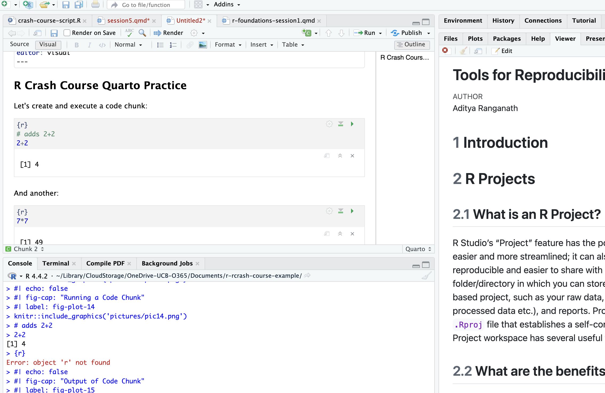

# load library
library(tidyverse)Tools for Reproducibility and Reporting
1 Preliminaries
Please load the tidyverse. Below, we’ll also eventually install and load a library called here, but it is not necessary to do so at the outset.
2 Introduction
In this lesson, we’ll learn about some tools that can help you write reproducible R code and manage your projects, as well as communicate your results with others (whether collaborators, students, the broader scholarly community, or the public) in a transparent and compelling way. In particular, we will introduce R Studio’s Projects feature, which provides a useful container for the various components of an R project (i.e. raw data, analysis outputs and processed data, scripts etc) and helps keep these components organized and sharable. We will also introduce Quarto, an open-source publishing system that enables you to produce articles, websites, slides, books, and other documents. The Quarto ecosystem is too vast for us to explore in a comprehensive here, so our focus will be on using Quarto as a platform for literate programming, which refers to the practice of writing code as human readable scripts that integrate narrative text, code, and code outputs into cohesive and accessible documents.
3 R Projects
As you move forward in using R, the scope and complexity of your work will increase, which means that it will become increasingly important (and challenging) to systematically track the various components of your projects, and to share these projects with others. R Studio’s Project functionality can make these data and project management tasks more tractable and streamlined, which in turn facilitates the reproducibility of your work.
3.1 What is an R Project?
An R Studio Project, quite simply, is a folder/directory in which you can store all of the materials associated with an R-based project, such as your raw data, your scripts, outputs (i.e. visualizations, processed data etc.), and reports. For each of these project components, you should create dedicated sub-directories within the main R Project directory; to make this more concrete, your R Project directory should look something like this:
Note the .Rproj file within the directory. It is this file that defines a directory as an R Project directory that functions as a self-contained workspace for a given project. File paths within an R Project can be defined in relative terms with respect to this main project directory (i.e. the directory which has the .Rproj file), which is a point we’ll return to below.
3.2 What are the benefits of using R Projects?
One of the primary benefits of an R Project is that it creates a standard working directory. When you create an R project, and subsequently use it as a container for your project files, R automatically sets the working directory to the root directory of the project, ensuring that relative paths work consistently and reliably regardless of where in the folder your scripts or files are located. In other words, this feature allows you to not worry about managing file directories; everything in the project file can be referenced in your script with respect to the root directory of the project (i.e. the project’s top-level directory that contains the .Rproj file).
Let’s say, for example, that your project directory looks like the one above, in Figure 1. First, note the .Rproj file within the directory, which indicates that this directory (r-crash-course-class-example) is the root directory of this R Project. Let’s say, for the sake of argument, that you are storing your scripts in the scripts sub-directory, and your raw data in the raw_data sub-directory. Because the working directory is standardized to be the root directory of the project, a script in the scripts sub-directory can refer to data living in the raw_data sub-directory using a relative path that is defined with respect to the Project’s root directory. So, for example, assuming the raw_data folder contains another folder named cc-data (for “crash course data”), which in turn contains two more sub-directories (pt for “persson-tabellini” and wb for “world bank”), with the persson_tabellini_workshop.csv file residing in pt, we could read in the Persson-Tabellini data with read_csv("raw_data/cc-data/pt/persson_tabellini_workshop.csv"). If we weren’t working within an R Project environment, this would not be possible, since the persson_tabellini_workshop.csv file is not within the scripts sub-directory.
The standardization of the working directory makes project management more convenient, and also enables sharing. For example, if you needed to share your work with a collaborator, you could zip up the R Project directory and send it to them. When they run your scripts, everything should work as they did on your own computer even though their directory structure is different, since all the file paths are defined in relative terms with respect to the root of the project directory. In addition, GitHub recognizes .RProj files, which allows you to push an R project directory and its components to GitHub. When a collaborator clones the repository to their local machine, they will be able to run your scripts (since the working directory is the Project’s root directory, and all file paths are defined in relation to it), add to your scripts, and push the changes back up to GitHub. When you update your local repository, everything should continue to work seamlessly.
Second, each R Project is self-contained, which means that variables and objects in one project do not interfere with another. In addition, you can have multiple RStudio windows open for different projects, and they won’t share variables or loaded packages, which is helpful if you’re working on multiple research projects at a time.
Third, each Project can have its own set of package versions, which prevents conflicts between projects that require different package versions. More generally, R Projects allow for a lot of customization that defines R’s behavior for that specific project, without generalizing to other projects and R-related files.
Finally, working within a project allows for more effective and organized file management. Instead of dispersing relevant files and directories across your computer, which makes it difficult to keep track of everything, a project allows us to create sub-directories for scripts, data, results, and documents and reports that are centrally located and easy to find.
In short, R Projects offer meaningful benefits in the realm of project and data management, and facilitate sharing, collaboration, and reproducibility.
3.3 How do you initiate an R Project?
To start an R Project, first go to File and click New Project:
Then select the option to start a project in a new working directory:

After that, select the New Project option:

You will then specify the location of the new R Project on your computer’s directory:
At this point, your project will be created (to confirm this, go to your project directory and confirm the existence of the .RProj file). You should configure your project directory something like in Figure 1 , with sub-directories for your raw or unprocessed data, scripts, R outputs (like processed data and visualizations), and reports and documents. This will help you keep track of a project’s many moving parts, and stay organized.
Once the project is set up, you can open your project by double-clicking the .RProj files, within R Studio or from your project directory; this will launch R Studio with the correct settings and working directory.
Once a project is created, you can also set the project options by going to Tools in the R Studio menu bar, and then clicking Project Options:
This will bring you to a menu interface that looks like the following:
You can explore the various options, but it’s generally recommended to set all of the workspace options to “No”, especially if you are working on a research project that will ultimately be shared and published. .RData is a binary file that R uses to save your workspace (which includes all of the R objects you create) across multiple sessions. Hadley Wickham, a leading R developer (particularly on the tidyverse suite we’ve been using extensively the past few days), recommends avoiding .RData, and saving all of your work in reproducible scripts that can precisely regenerate all of your work. Using scripts, rather than .RData, to keep track of your objects and work (and regenerate them as necessary) will make your work more reproducible, since it reduces the likelihood that you unknowingly carry over old objects into new work and create hidden dependencies in your code ( by relying on objects from a previous session that were not explicitly created in your current script). In addition, carrying over the workspace session to session may end up leading to a cluttered environment, with a lot of superfluous objects you can’t keep track of. In short, you will generally be best-served by relying on well-documented scripts, rather than .RData to track your work and restore your environment after closing a session; using .RData to save your workspace could be more convenient in the short run, but will likely be more painful in the long run.
4 Quarto
Quarto is an open source publishing system that allows us to create a variety of outputs (such as reports, presentations, websites, and dashboards) that facilitate research related communications with a variety of audiences, including colleagues, collaborators and co-authors, students, and the public. It is compatible with a variety of programming languages, including R.
One of the many benefits of Quarto is that it enables literate programming, a concept developed by the computer scientist Donald Knuth. Literate programming is a practice in which the authors of code embed their code in human-readable documents that also contain narrative exposition of the code, and the actual outputs of the code, so that others can clearly understanding how the different parts of an analysis fit together. Among other things, literate programming facilitates transparency and clarity when communicating about the scripts used to generate research results. The lesson plans we’ve used in this workshop work within the literate programming paradigm, to the extent that they combine narrative text, blocks of code, and code outputs into an integrated document. Below, we’ll learn how to create simple literate programming documents using Quarto.
4.1 Making a New Quarto Document
To start a new Quarto Document, open up R Studio, then click New File, then select Quarto Document:
Once you do so, it will bring up a menu like the one below; go ahead and give your document a name, and list your name as the author, then click OK:
Once you click OK, a new Quarto document, with file extension “.qmd” will be created. It’ll look something like this:
The document comes prepopulated with some text that can serve as a useful guide to some relevant syntax.
4.2 Writing the Document
A Quarto document is comprised of three main elements. First, there is the YAML header, which contains metadata for the entire document, and allows us to define document settings and set rules for how the document will behave. Among many other things, we can use the YAML header to specify the desired output type (i.e. html, pdf, word), and define a table of contents. For example, see the YAML header associated for the first lesson plan we worked through on the first day of the workshop:
Note that this is a pretty simple YAML header, and it is possible to customize a document in complex ways using the YAML header; however, this is beyond the scope of our lesson.
Second, there is document text, which is formatted in the Markdown language. Markdown is extremely simple, and if you are not familiar with it, can quickly get started by consulting this guide. You also have the option of formatting your text using the Quarto toolbar; from there, you can do all of the things you could also do with Markdown, such as add headers, add bullet points, format your text, add hyperlinks, and add images (among other things):
Finally, the third main components of a Quarto file are “code chunks”, where you can create blocks of code which generate outputs embedded in the document. You can also comment the code added within these blocks, just as you would comment code in a script. To create a code chunk you can go to to Code in the R Studio Menu bar up top, then click Insert Chunk. Another way, perhaps easier, is to click the green “C” button in the Quarto menu:
Then, you can add code (and code comments) within the code chunk, and run it by clicking the green arrow:
After you click the “Run” button, the, code will run and the result will print immediately below:
There are various ways to customize your code blocks and specify their behavior. For example, you can hide code blocks so that only the output is shown; you can also create code blocks that don’t execute, so that the final report shows the code block without the output; you can suppress code warnings; and so on. For more information on the relevant syntax needed to customize code chunks in these (and other) ways, see this guide to Quarto.
4.3 Rendering the Document
Let’s go ahead and modify the document; we’ll delete the pre-populated text, and add our own heading, as well as another code chunk. The document looks something like this:

Now, let’s go ahead and save this .qmd file to the documents-reports directory within the R Project we created earlier. We can do so by clicking File, then Save As, then navigating to the directory and saving. We’ll save the file as “quarto-example.qmd”. Now that it’s saved in the desired directory, we can render the html file by clicking the Render button in the Quarto Menu:
The rendered document should appear in either a separate window, or in your R Studio Viewer pane. You can choose where the document renders by clicking the small downward-pointing arrow next to the Render button, and clicking either Preview in Window or Preview in Viewer Pane:

If you choose to preview in the viewer pane, it’ll look something like what you see below. Note the HTML preview on the right. This is a nice way of keeping track of what the rendered document looks like as you write your document within the .qmd file:
Note that after rendering, an html file will also be created in the same directory as your .qmd file, and will update each time you render the .qmd file by clicking the Render button.
5 R Projects, Quarto, and the here() package
R Projects and Quarto are two essential R tools that enable data management, sharing, and communication, both within the scholarly community and with the broader public. Though we’ve introduced these tools separately, it’s likely you’ll want to use them in conjunction (for instance, by placing your Quarto files and rendered documents within the reports-documents subdirectory of your R Project directory, as we did above).
As we discussed above, the R Project environment is a self-contained directory, where file paths can be set relative to the project’s root directory (i.e. the highest-level directory within the R project, which contains the .RProj file). When working with Quarto, the program automatically sets the root directory for the code that’s executed within the document to the same location as the .qmd file. When Quarto files are in an R Project, the working directory set by the location of the Quarto file overrides the working directory set by the R Project. For example, if the .qmd file is in the documents-reports directory (as it is here), it will set that as its root directory; as a result, it would be impossible to access the data (in the raw_data folder) from the Quarto document using a file path that is set relative to the Project’s root directory.
To make this more concrete, let’s first note the directory structure of the R Project root directory:
WIthin the raw-data sub-directory, there is another directory called cc-data, and within cc-data, there is a directory named pt, within which the persson_tabellini_workshop.csv data that we’ve been using resides. Thus, the path to the data from the Project’s root directory runs as follows:
raw_data–>cc-data–>pt–>persson_tabellini_workshop.csv
We can use this file path to read in the Persson-Tabellini data from a script stored in the scripts subdirectory. In particular, we could read the data in with the following:
read_csv("raw_data/cc-data/pt/persson_tabellini_workshop.csv")Within our sample R script, it looks like this:
Now, let’s try to read the data in from within a .qmd file in the report-documents subdirectory:
Note that trying to run the code chunk throws an error, since the code chunk is interpreting the location of the .qmd file (the report-documents directory) as the working directory. As a result, the file path doesn’t work; the code chunk is looking for the data in the reports-documents directory, but it doesn’t exist there. As expected, attempts to render the document fail for the same reason; when the rendering process hits the code chunk that tries to read in the data, it fails, and the rendering process terminates:
The easiest solution to this problem is to use the here() function from the here package, which automatically finds the root directory of the R Project you’re working in (remember that the root directory of your R project is the directory in which the .Rproj file is located) and builds paths from there. To see how it works, go ahead and install this package with the following:
install.packages("here")Then, load the here package at the top of your Quarto document by passing it to the library() function:
library(here)Then, whenever you need to read in data from your raw_data directory into a .qmd file in another (i.e. report-documents) directory, simply use the here() function within that code chunk to set the working directory as the Project’s root directory. After setting the working directory as the root directory, go ahead and read in your data as you would in a script (i.e. using a path defined relative to the root directory), and it should successfully read in. In short, the here() function overrides the default behavior within Quarto documents to set the working directory as the directory with the .qmd file, and forces these documents to follow the default behavior of R Project files and use the root directory of the R Project as the working directory that can be used to define relative file paths. Let’s see how it works; first, we’ll read in the data using a file path relative to the root directory by first using the here() function to set the working directory as the Project’s root directory:
setwd(here::here())
pt<-read_csv("raw_data/cc-data/pt/persson_tabellini_workshop.csv")Now, when you run the code chunk, it should successfully execute:

After this, the file will also successfully render:

So, to summarize:
In an R Project, the working directory is automatically set to be the root of the R Project directory, and files can be read into the R environment in scripts that use file paths that are defined relative to the root directory
However, when working in Quarto documents, Quarto defaults to setting the working directory as the directory in which the .qmd file exists, which overrides the behavior of an R Project (which defaults to setting the working directory as the Project’s root directory). As a result, while one could read in data from the raw_data folder into a script in the scripts folder using a relative path defined with respect to the Project’s root directory, it would not be possible to read in data from the raw_data folder into a Quarto document in the reports-documents using a relative path defined with respect to the Project’s root directory.
In order to force Quarto to use the root directory of the R Project as the working directory, we can use the
here()function. By using thehere()function to set the working directory as the Project’s root directory (within a code block right before reading in data), we can read in the data using a file path that is defined with respect to the root of the R Project directory, rather one that is defined with respect to the directory in which the .qmd file is located.
6 Exercises
Question 1
Create a new R Project that will serve as a “practice” workspace for you to continue practicing your R skills going forward, with the directory structure recommended earlier. In the Project, you may wish to add the scripts and data from our workshops. Check to make sure your scripts use relative paths with respect to the root project directory, and are able to run successfully. As you continue to practice R, you can add new scripts and data to this R Project, and keep all of your practice and skill-development work in one place.
Question 2
Create a new Quarto document, and use it to present the relevant code and output from previous practice exercises. Make sure to comment your code, and render the completed file as an html document.
7 Further Reading
For more on Quarto, please see this guide. More generally, if you wish to continue learning R, the best resource is the online book R for Data Science. Please reach out to me if there are particular things you’d like to learn, and are looking for more tailored resources.